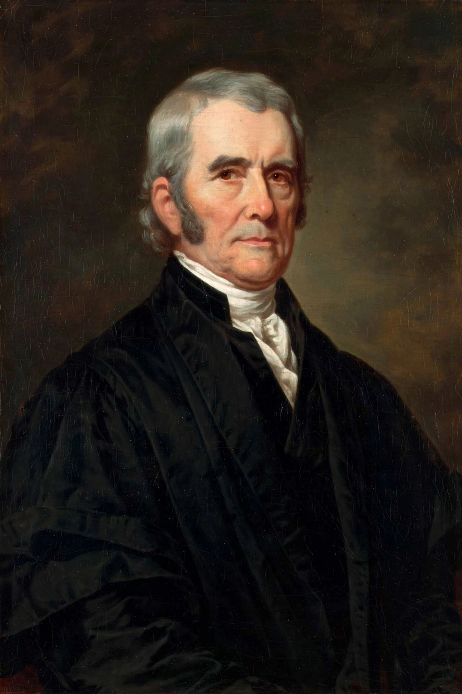

| Born | 24 September 1755 Germantown, Virginia |
|---|---|
| Died | 6 July 1835 (aged 79) Philadelphia, Pennsylvania |
| Office | 4th Chief Justice of the United States (1801–1835) |
| Previous offices | U.S. Secretary of State (1800–1801); U.S. Representative from Virginia |
| Appointed by | John Adams |
| Party | Federalist |
| Spouse | Mary Willis Ambler (m. 1783) |
John Marshall (September 24, 1755 – July 6, 1835) was an American statesman, lawyer, and Founding Father who served as the fourth chief justice of the United States from 1801 until his death in 1835. Marshall remains the longest-serving chief justice in American history, and his opinions established the Supreme Court as a powerful and independent branch of government, laid the foundations of constitutional law, and strengthened the federal government at the expense of state sovereignty.
Marshall was born in a log cabin near Germantown in Fauquier County, Virginia, the eldest of fifteen children of Thomas Marshall, a planter and surveyor who was a friend of George Washington. During the Revolutionary War he served in the Continental Army, enduring the winter at Valley Forge, and rose to the rank of captain. After briefly studying law at the College of William & Mary under George Wythe, he was admitted to the bar in 1780 and built a successful practice in Richmond, becoming one of Virginia's leading lawyers.
A committed Federalist, Marshall defended the new Constitution at the Virginia ratifying convention of 1788 against Patrick Henry. In 1797 President John Adams appointed him to the diplomatic mission to France that became embroiled in the XYZ Affair, which made him a national figure. He was elected to the House of Representatives in 1799 and in 1800 became Adams's Secretary of State.
Adams nominated Marshall as Chief Justice in January 1801, and he was confirmed by the Senate days later; he continued to serve as Secretary of State until the end of Adams's term, one of the few Americans to hold both offices at once. As Chief Justice, Marshall consolidated the Court's authority and collegiality: under his leadership the justices abandoned the practice of delivering separate seriatim opinions in favour of a single majority opinion, usually written by Marshall himself, and they began lodging together in Washington, fostering a spirit of institutional unity.
His tenure is famous for decisions that expanded federal power and judicial authority:
Marshall's nationalism frequently put him at odds with his distant cousin Thomas Jefferson and the Democratic-Republican administrations that dominated his era. He presided over the treason trial of Aaron Burr in 1807, construing the constitutional definition of treason narrowly and angering Jefferson.
Marshall died in Philadelphia on 6 July 1835, having served on the Court for more than 34 years. The Liberty Bell is traditionally said to have cracked while tolling in mourning for him. His jurisprudence is widely credited with making the Constitution a durable framework for a continental republic and with establishing the judiciary as a co-equal branch of the federal government.
From Wikipedia, the free encyclopedia.